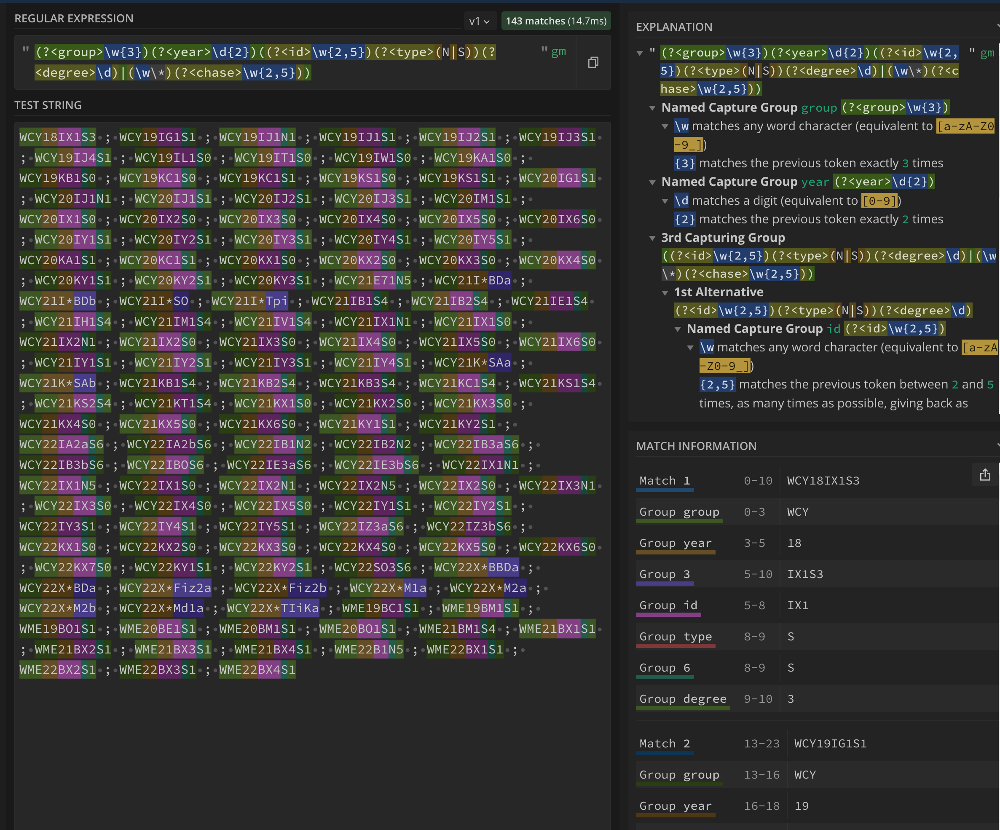
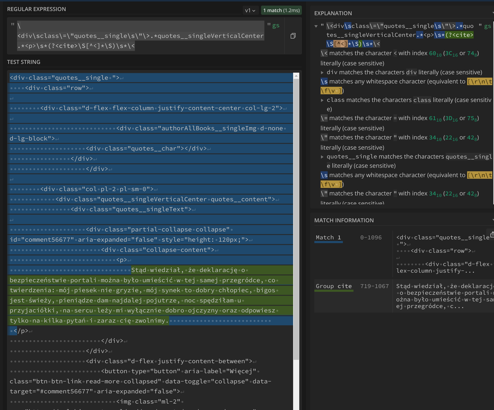
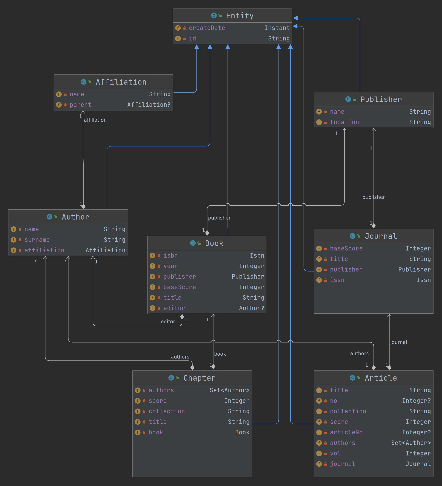

Metody i narzędzia generowania kodu wykonywalnego
ppor. mgr inż. Norbert Waszkowiak
nr tel.: 261 839 060
e-mail: norbert.waszkowiak@wat.edu.pl
pomieszczenie: bud. 100 pok. 254B
(zapraszam również do kontaktu przez MS Teams)
e-mail: norbert.waszkowiak@wat.edu.pl
pomieszczenie: bud. 100 pok. 254B
(zapraszam również do kontaktu przez MS Teams)
Przeplanowanie zajęć
Zasady oceniania
- Każde przedstawione zadanie podlega ocenie 2-5;
- W przypadku stwierdzenia niesamodzielności w wykonaniu pracy zostanie ona wliczona do średniej jako 0;
- Ostateczna ocena z laboratoriów będzie wynikała ze średniej z wszystkich zadań laboratoryjnych;
- Warunkiem zaliczenia jest oddanie wszystkich zadań laboratoryjnych w ustalonym terminie dla każdego zadania.
Zadanie 1: Wyrażenia regularne
A komu to potrzebne? A dlaczego?
Wyrażenia regularne - (ang. regular expression, w skrócie regex lub regexp) - wzorzec opisujący łańcuch symboli. Teoria wyrażeń regularnych jest związana z teorią języków regularnych. Wyrażenia regularne mogą określać zbiór pasujących łańcuchów, jak również wyszczególniać istotne części łańcucha.Pokaz z objaśnieniem
Przykład z grupami dziekańskimi
Dane:
WCY18IX1S3 ; WCY19IG1S1 ; WCY19IJ1N1 ; WCY19IJ1S1 ; WCY19IJ2S1 ; WCY19IJ3S1 ; WCY19IJ4S1 ; WCY19IL1S0 ; WCY19IT1S0 ; WCY19IW1S0 ; WCY19KA1S0 ; WCY19KB1S0 ; WCY19KC1S0 ; WCY19KC1S1 ; WCY19KS1S0 ; WCY19KS1S1 ; WCY20IG1S1 ; WCY20IJ1N1 ; WCY20IJ1S1 ; WCY20IJ2S1 ; WCY20IJ3S1 ; WCY20IM1S1 ; WCY20IX1S0 ; WCY20IX2S0 ; WCY20IX3S0 ; WCY20IX4S0 ; WCY20IX5S0 ; WCY20IX6S0 ; WCY20IY1S1 ; WCY20IY2S1 ; WCY20IY3S1 ; WCY20IY4S1 ; WCY20IY5S1 ; WCY20KA1S1 ; WCY20KC1S1 ; WCY20KX1S0 ; WCY20KX2S0 ; WCY20KX3S0 ; WCY20KX4S0 ; WCY20KY1S1 ; WCY20KY2S1 ; WCY20KY3S1 ; WCY21E71N5 ; WCY21I*BDa ; WCY21I*BDb ; WCY21I*SO ; WCY21I*Tpi ; WCY21IB1S4 ; WCY21IB2S4 ; WCY21IE1S4 ; WCY21IH1S4 ; WCY21IM1S4 ; WCY21IV1S4 ; WCY21IX1N1 ; WCY21IX1S0 ; WCY21IX2N1 ; WCY21IX2S0 ; WCY21IX3S0 ; WCY21IX4S0 ; WCY21IX5S0 ; WCY21IX6S0 ; WCY21IY1S1 ; WCY21IY2S1 ; WCY21IY3S1 ; WCY21IY4S1 ; WCY21K*SAa ; WCY21K*SAb ; WCY21KB1S4 ; WCY21KB2S4 ; WCY21KB3S4 ; WCY21KC1S4 ; WCY21KS1S4 ; WCY21KS2S4 ; WCY21KT1S4 ; WCY21KX1S0 ; WCY21KX2S0 ; WCY21KX3S0 ; WCY21KX4S0 ; WCY21KX5S0 ; WCY21KX6S0 ; WCY21KY1S1 ; WCY21KY2S1 ; WCY22IA2aS6 ; WCY22IA2bS6 ; WCY22IB1N2 ; WCY22IB2N2 ; WCY22IB3aS6 ; WCY22IB3bS6 ; WCY22IBOS6 ; WCY22IE3aS6 ; WCY22IE3bS6 ; WCY22IX1N1 ; WCY22IX1N5 ; WCY22IX1S0 ; WCY22IX2N1 ; WCY22IX2N5 ; WCY22IX2S0 ; WCY22IX3N1 ; WCY22IX3S0 ; WCY22IX4S0 ; WCY22IX5S0 ; WCY22IY1S1 ; WCY22IY2S1 ; WCY22IY3S1 ; WCY22IY4S1 ; WCY22IY5S1 ; WCY22IZ3aS6 ; WCY22IZ3bS6 ; WCY22KX1S0 ; WCY22KX2S0 ; WCY22KX3S0 ; WCY22KX4S0 ; WCY22KX5S0 ; WCY22KX6S0 ; WCY22KX7S0 ; WCY22KY1S1 ; WCY22KY2S1 ; WCY22SO3S6 ; WCY22X*BBDa ; WCY22X*BDa ; WCY22X*Fiz2a ; WCY22X*Fiz2b ; WCY22X*M1a ; WCY22X*M2a ; WCY22X*M2b ; WCY22X*Md1a ; WCY22X*TIiKa ; WME19BC1S1 ; WME19BM1S1 ; WME19BO1S1 ; WME20BE1S1 ; WME20BM1S1 ; WME20BO1S1 ; WME21BM1S4 ; WME21BX1S1 ; WME21BX2S1 ; WME21BX3S1 ; WME21BX4S1 ; WME22B1N5 ; WME22BX1S1 ; WME22BX2S1 ; WME22BX3S1 ; WME22BX4S1Pokaz z objaśnieniem
Wprowadzenie w sytuacje taktyczna
Firma "S" utrzymująca system do zarządzania danymi badawczymi, publikacjami i pracownikami naukowymi. Pozyskała nowego klienta, który dotychczas korzystał z innego rozwiązania i zaszła potrzeba migracji danych z poprzedniego systemu. W systemie firmy "S" w encji opisującej publikacje istnieją osobne pola oznaczające nr artykułu, nr wydania, strony, wydawca itp. itd. W starym systemie wszystkie te pola znajdują się w dwóch polach tekstowych, aby wyeksportować dane z tych pól, należy skorzystać z wyrażeń regularnych.Zadanie
Z zastosowaniem dobrych praktyk programistycznych (lub to) zaimplementuj program korzystający z wyrażeń regularnych, który dostarczy interfejs umożliwiający rozdzielenie danych szczegółowych z dwóch dostarczonych pól tekstowych. Potwierdzeniem działania programu mają być testy jednostkowe przygotowane w oparciu o przykładowe dane.Plik csv podzielony jest na następujące kolumny:
- publisher - dane wej.
- details - dane wej.
- no - dane wyj.
- vol - dane wyj.
- article no - dane wyj.
- pages in range - dane wyj.
- pages as size - dane wyj.
- publisher name - dane wyj.
- publisher location - dane wyj.
- publisher year - dane wyj.
Separator: "$"
Zasady oceniania
Ocenie podlegać będą:
Program należy wykonać w jednym z następujących języków: Java, Kotlin, Scala, Python, C#, C++
Do końca trwania laboratoriów:
Termin oddania pracy: 10.11.2022r. godz: 24:00
- Poprawność wykonania;
- Samodzielność;
- Zastosowanie dobrych praktyk programistycznych;
- Wykorzystanie systemu kontroli wersjii.
Program należy wykonać w jednym z następujących języków: Java, Kotlin, Scala, Python, C#, C++
Do końca trwania laboratoriów:
- przesłać za pomocą formularza link do utworzonego publicznego repozytorium na github.com
- przesłać za pomocą formularza opracowane wyrażenia regularne. Formularz dopuszcza dowolną liczbę wypełnień. Czas przesłania i liczba odpowiedzi posłużą do oceny samodzielności wykonania.
Termin oddania pracy: 10.11.2022r. godz: 24:00
Zadanie 2: Kalkulator antrl
Co to jest i do czego służy?
ANTLR (ang. ANother Tool for Language Recognition) to narzędzie służące do tworzenia kompilatorów oraz translatorów z opisu gramatyki zawierającego akcje w języku Java, C++, C# lub Python. Domyślnie ANTLR generuje lekser i parser w Javie, a plik z gramatyką ma rozszerzenie .g DokumentacjaWzorowy pokaz
Gramatyki antlr4
wget https://raw.githubusercontent.com/antlr/grammars-v4/master/cpp/CPP14Lexer.g4
wget https://raw.githubusercontent.com/antlr/grammars-v4/master/cpp/CPP14Parser.g4
wget https://www.antlr.org/download/antlr-4.11.1-complete.jar
nano example.cpp
java -jar ./antlr-4.11.1-complete.jar CPP14Lexer.g4 CPP14Parser.g4
java -cp .:antlr-4.11.1-complete.jar org.antlr.v4.gui.TestRig CPP14 translationUnit -tree -gui example.cpp
Wzorowy pokaz
grammar Calculator;
expr: op=('*'|'/') expr expr # MulDiv
| op=('+'|'-') expr expr # AddSub
| INT # Int
;
INT: [0-9]+ ;
DOT: '.';
TIMES: '*' ;
DIV: '/' ;
PLUS: '+' ;
MINUS: '-' ;
WS : [ \t\r\n]+ -> skip ;
Wzorowy pokaz
/ * 5 3 + 2 3

Zadanie
- Utworzyć publiczne repozytorium na github.com. Zmieścić link w formularzu
- Do końca zajęć laboratoryjnych za pomocą publicznie dostępnych gramatyk (Java, Python lub C#), wygenerować za pomocą ANTRL4 drzewo składniowe dla własnego przykładowego kodu składającego się z przynajmniej jednej pętli. Cały proces należy udokumentować i zamieścić w repozytorium w postaci pliku zapisanego w języku Markdown.
- Opracować gramatykę języka - kalkulatora. Zaimplementować język w wykorzystując ANTRL4.
Zasady oceniania
Ocenie podlegać będą:
- Poprawność wykonania;
- Samodzielność;
- Zakres funkcjonalności kalkulatora;
- Zastosowanie dobrych praktyk programistycznych;
- Wykorzystanie systemu kontroli wersjii.
Zadanie 3: Script engine
A komu to potrzebne? A dlaczego?
Script Engine to interpretator języka programowania komputerowego, którego funkcją jest interpretacja tekstu programów pochodzącego od użytkowników, tłumaczenie takiego tekstu na kod maszynowy wykonywalny przez komputery oraz realizacja szeregu funkcji. W praktyce jest on wykorzystywany jako interfejs do wpływania w zaawansowany (nieprzewidziany w trakcie implementacji) sposób w stan systemu informatycznego. Przykładowo jest to korekcja danych znajdujących się w systemie lub wywoływanie zadań znajdujących się w harmonogramie (ang. scheduling) realizujących np. integracje z systemami zewnętrznymi.Pokaz z objaśnieniem
Reprezentacja encji w bazie NOSQL
//Journal
{
"id": "1",
"baseScore": 100.0,
"title": "Biuletyn WAT",
"publisherId": "2",
"issn": "1234-5865"
}
// Publisher
{
"id": "2",
"name": "Wydawnictwo WAT",
"location": "Warszawa",
}
//Journal with Publisher
{
"id": "1",
"baseScore": 100.0,
"title": "Biuletyn WAT",
"publisher": {
"id": "2",
"name": "Wydawnictwo WAT",
"location": "Warszawa",
},
"issn": "1234-5865"
}
👨💻
Live coding
Zadanie
Opracować aplikacje, która:- posiada przynajmniej 5 encji;
- posiada api restowe realizujące przynajmniej po jednej operacji: GET, POST, PUT, DELETE;
- posiada system zarządzania bazą danych, który ma być umieszczony w kontenerze i odpowiednio uruchomiony;
- jest napisane w jednym z języków: Java, Kotlin, Scala, Python lub C#;
- ma dostarczać dodatkowe endpoint restowy do wykonywania skryptów wpływających na stan aplikacji;
- ma w README.md zamieszczony przykładowy skrypt do realizacji za pomocą endpointu do wykonywania skryptów. Logika skryptu ma wykraczać poza podstawowe operacje zapisu i odczytu z bazy danych;
- ma posiadać mechanizm wykonujący zdefiniowane zadania zgodnie z harmonogramem zadań (ang. job scheduler) np. CroneScheduler*;
- ma dostarczać odpowiednie endpointy restowe do modyfikowania, edytowania i podglądu zadań z harmonogramu;
- ma w README.md zamieszczony przykładowy skrypt scheduler-owy, który w trakcie wykonywania skorzysta z zewnętrznego API. Dopuszczalne jest dodanie dodatkowych serwisów w aplikacji realizujących komunikacje z zewnętrznym API. W skrypcie muszą znaleźć się instrukcje wpływające na wywołanie metody z zewnętrznego serwisu;*
- ma w README.md zapisane wszelkie dodatkowe operacje, wraz z poleceniami uruchomienia aplikacji.
Zasady oceniania
Ocenie podlegać będą:
Do końca trwania laboratoriów należy za pomocą formularza przesłać link do publicznego repozytorium github.com, w którym będzie opracowywane zadanie. Termin oddania pracy: 15.11.2022r. godz: 24:00
- Poprawność wykonania;
- Samodzielność;
- Zastosowanie dobrych praktyk programistycznych;
- Wykorzystanie systemu kontroli wersjii.
Do końca trwania laboratoriów należy za pomocą formularza przesłać link do publicznego repozytorium github.com, w którym będzie opracowywane zadanie. Termin oddania pracy: 15.11.2022r. godz: 24:00
Zadanie 4: Code generation and manipulation
Wprowadzam w sytuacje taktyczną
Firma „A” utrzymuje duży system informatyczny do zarządzania danymi badawczymi, informacjami naukowymi i pracownikami uczelni. Posiada ona dużą liczbę klientów, w tym WAT, który oczkuje, że w encji opisującej autora znajdzie się pole określające jego stopień wojskowy. Zmiany takiej nie można wprowadzić dla całego systemu, ponieważ większość uczelni nie oczkuje takiego pola, więc zmiana musi być wyłącznie na systemie uruchomianym dla WAT.Możliwe rozwiązania
- Osobna gałąź
- Feature toggle
- Refleksja - manipulacja kodem w czasie wykonywania programu
👨💻
Live coding
Zadanie
Do aplikacji z poprzedniego zadania dodać możliwość rozszerzania encji o dodatkowe pola poprzez dodatkową konfigurację np. z pliku JSON, gradle.properties lub parametrów systemowych. Funkcjonalność ma dodatkowo rozszerzyć klasy DTO response i request, tak aby endpointy restowe obsługiwały nowe pola. W README.md należy opisać sposób, w jaki należy dostarczyć do systemu konfiguracje.Zasady oceniania
Ocenie podlegać będą:
- Poprawność wykonania;
- Samodzielność;
- Zastosowanie dobrych praktyk programistycznych;
- Wykorzystanie systemu kontroli wersjii.